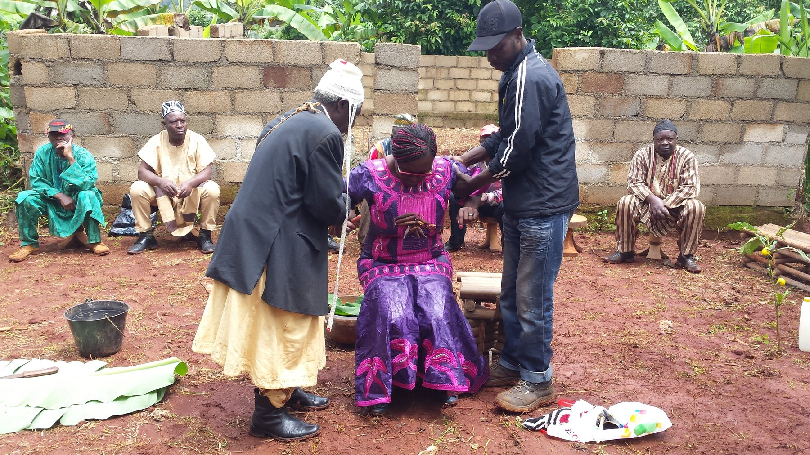
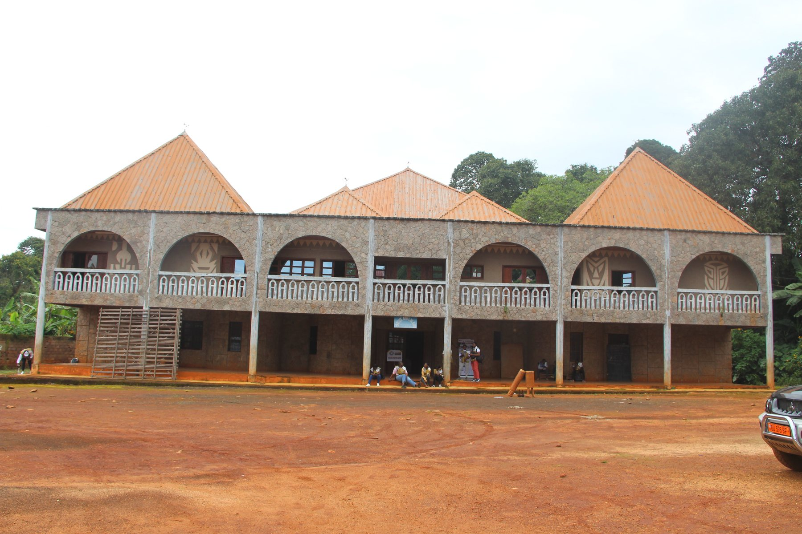
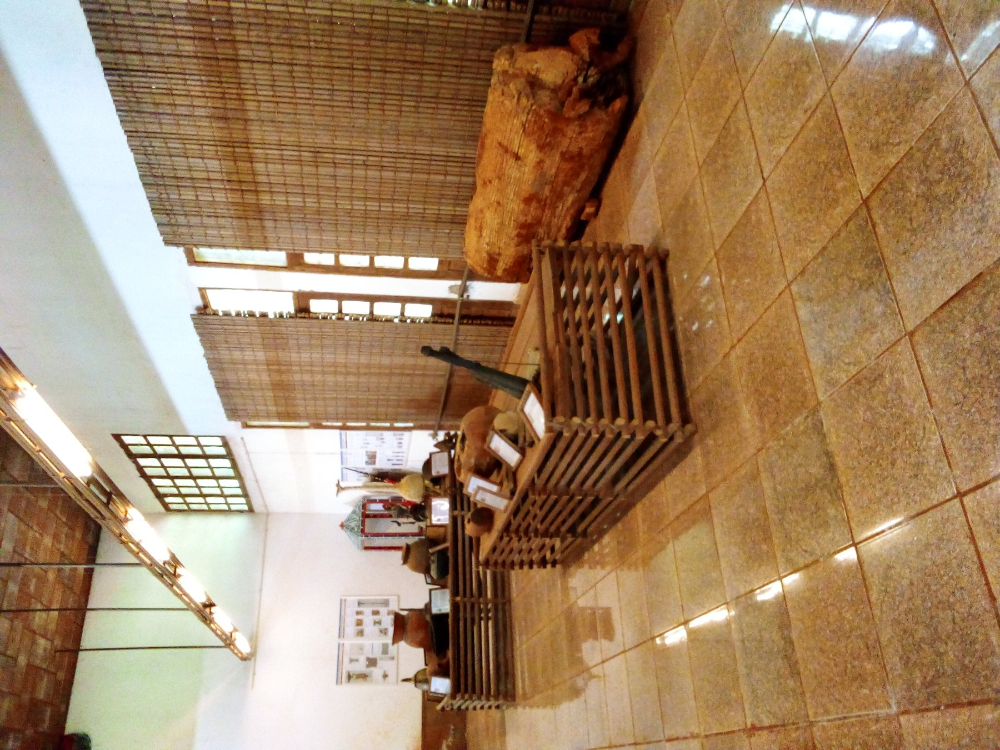
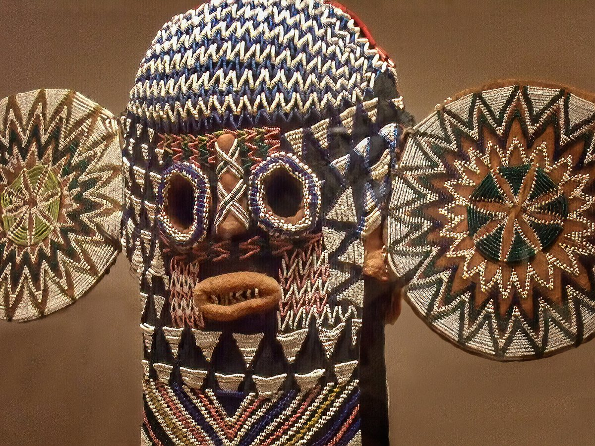
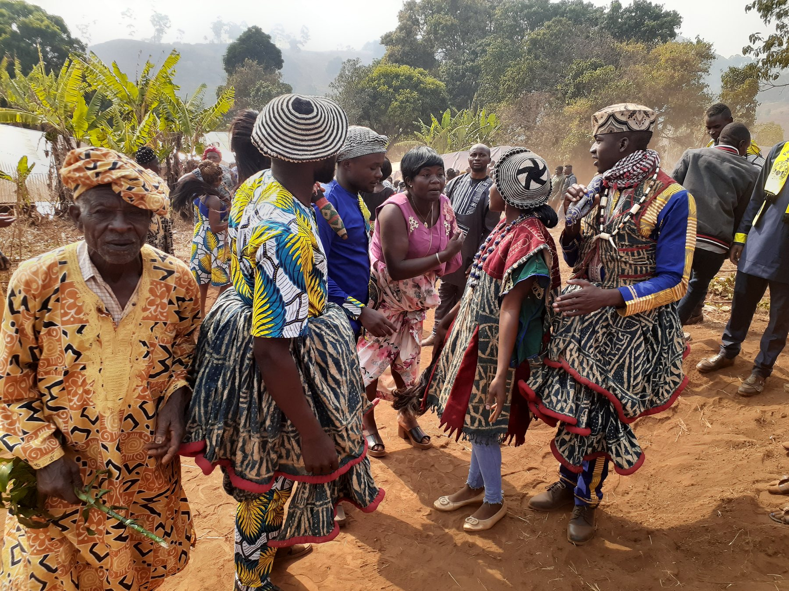

20Jun
Annual Baham Cultural Festival
A full day of traditional dance, music, food, and celebration of our Bamiléké heritage with families from across Texas.

"Nkam si lah" — Unity is Strength
The Baham Bamiléké people of Cameroon's Western Highlands carry a legacy of art, royalty, and community. Here in Dallas, Texas, we honor our ancestors while building a vibrant future together.


The Baham people are one of the proud chieftaincies of the Bamiléké nation in Cameroon's West Region. Known for our sophisticated art, hierarchical governance under the Fon (chief), and vibrant cultural expressions, we have carried these traditions across oceans to build community in Dallas, Texas.
Honoring the Fon and our ancestral governance — a legacy of wisdom and leadership.
Coming together as one family across borders, supporting each other in the diaspora.
Keeping our language, dance, music, and art alive for the next generation.
Building bridges between our Cameroon roots and our American home.
Nestled in the Western Highlands at an elevation of 1,400m, the Kingdom of Baham is a historic chieftaincy in Cameroon's West Region — renowned for its royal traditions, sacred forests, and artistic heritage.
Each artifact, dance, and ceremony carries the soul of our people — a bridge between the visible and spiritual worlds.


The elephant mask is the most iconic symbol of Bamiléké artistic achievement. With protruding circular ears, geometric beadwork, and rows of isosceles triangles — the sacred symbol of the leopard — it represents the Fon's power to transform into nature's mightiest creatures.
This very mask resides in the Dallas Museum of Art — a living bridge connecting our ancestral homeland to our Texas community.
A full day of traditional dance, music, food, and celebration of our Bamiléké heritage with families from across Texas.
Our monthly assembly — discussing community needs, planning events, and connecting with fellow Baham members.
Teaching our children the Ghomala' language, traditional dances, and the history of the Baham chieftaincy.
Guided by tradition and committed to service, our leaders bridge our homeland and our Dallas community.
Whether you are Baham, Bamiléké, Cameroonian, or a friend of our culture — you are welcome. Together we preserve our heritage and uplift our community in the Dallas–Fort Worth metroplex.
Or contact us at info@baham-dallas.org · (469) 555-BHAM
Chat on WhatsApp